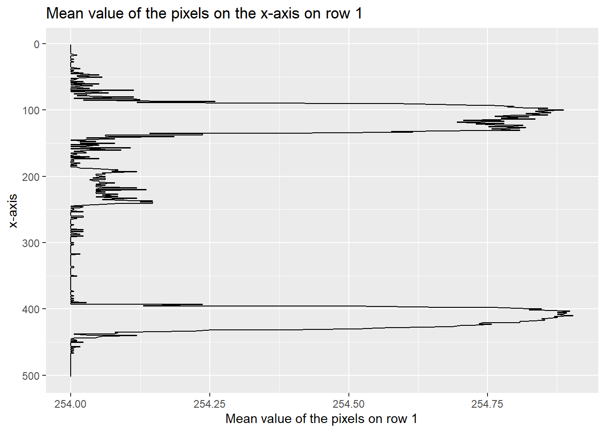
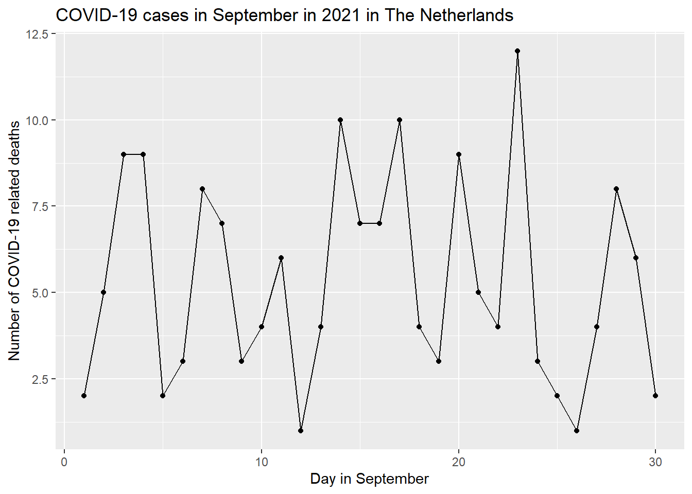

7 Parameters and Presentations
7.1 Why using parameters?
Parameters make reports dynamic and customizable. They save time and effort by allowing you to create a single report that can display different results or data sets. Parameters also make reports more interactive and user-friendly, and that’s what we want!
7.2 The report
For this report we’re gonna use a dataset about the daily number of new reported COVID-19 cases and deaths by EU/EEA country.
We first need the import the data we’re gonna use for this report.
library(tidyverse)
EDCC_data <- read.csv("data/edcc_data.csv") #importing dataset
head(EDCC_data) #checking if data is imported correctly ## dateRep day month year cases deaths countriesAndTerritories geoId
## 1 23/10/2022 23 10 2022 3557 0 Austria AT
## 2 22/10/2022 22 10 2022 5494 4 Austria AT
## 3 21/10/2022 21 10 2022 7776 4 Austria AT
## 4 20/10/2022 20 10 2022 8221 6 Austria AT
## 5 19/10/2022 19 10 2022 10007 8 Austria AT
## 6 18/10/2022 18 10 2022 13204 7 Austria AT
## countryterritoryCode popData2020 continentExp
## 1 AUT 8901064 Europe
## 2 AUT 8901064 Europe
## 3 AUT 8901064 Europe
## 4 AUT 8901064 Europe
## 5 AUT 8901064 Europe
## 6 AUT 8901064 EuropeLooking at the data, we can see that this dataset is already tidy, except the colomn “dataRep”, but we’re not gonna use that colomn. That saves us some work (thankfully).
For this report, we’re gonna study the COVID-19 cases and the COVID-19 related deaths in The Netherlands in March 2021. We choose September (month=11) because it’s the first month after the big summer break. Even though almost everything was online, Almost everyone is now heading back to school. Will the COVID-19 cases and related deaths increase during this month?
We set the params in the YAML header as following.
---
params:
country: "Netherlands"
year: 2021
month: 9
---We’re gonna plot the data. We’re gonna make two graphs, one for the COVID-19 cases and one for the COVID-19 related deaths.
To do this we need to filter the imported data first with our params.
library(tidyverse) #load in tidyverse package
data_params <- EDCC_data %>% filter(countriesAndTerritories == params$country,
year == params$year,
month == params$month) #creating a new dataset with our params
head(data_params) #checking if the data is correctly filtered ## dateRep day month year cases deaths countriesAndTerritories geoId
## 1 30/09/2021 30 9 2021 1701 2 Netherlands NL
## 2 29/09/2021 29 9 2021 1751 6 Netherlands NL
## 3 28/09/2021 28 9 2021 1717 8 Netherlands NL
## 4 27/09/2021 27 9 2021 1386 4 Netherlands NL
## 5 26/09/2021 26 9 2021 1599 1 Netherlands NL
## 6 25/09/2021 25 9 2021 1600 2 Netherlands NL
## countryterritoryCode popData2020 continentExp
## 1 NLD 17407585 Europe
## 2 NLD 17407585 Europe
## 3 NLD 17407585 Europe
## 4 NLD 17407585 Europe
## 5 NLD 17407585 Europe
## 6 NLD 17407585 EuropeNow that we’ve our wanted dataset, we can now plot the data.
library(ggplot2)
data_params %>% ggplot(aes(x = day, y = cases)) +
geom_line() +
geom_point() +
labs(title = "COVID-19 cases in September in 2021 in The Netherlands",
y = "Number of COVID-19 cases",
x = "Day in September")
library(ggplot2)
data_params %>% ggplot(aes(x = day, y = deaths)) +
geom_line() +
geom_point() +
labs(title = "COVID-19 cases in September in 2021 in The Netherlands",
y = "Number of COVID-19 related deaths",
x = "Day in September")
We’ve now plotted two graphs. In the first graph we can see the COVID-19 cases in September in 2021 in The Netherlands. We can see that the cases are decreasing, but when we look at the COVID-19 related deaths we see that there’s no increasing or decreasing.